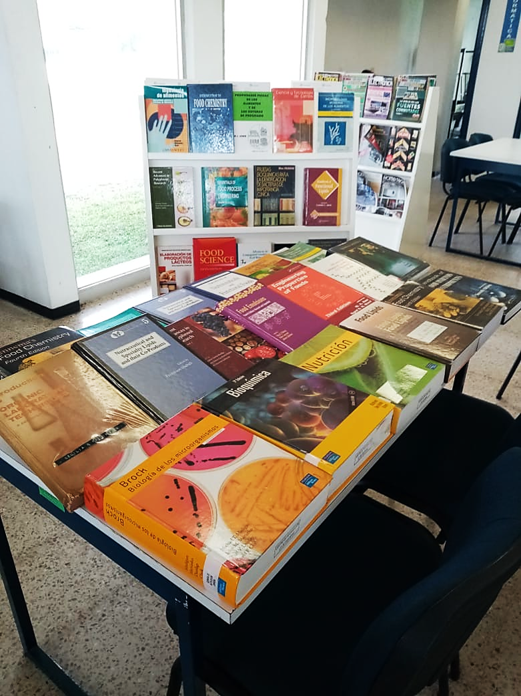
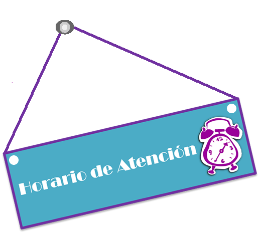
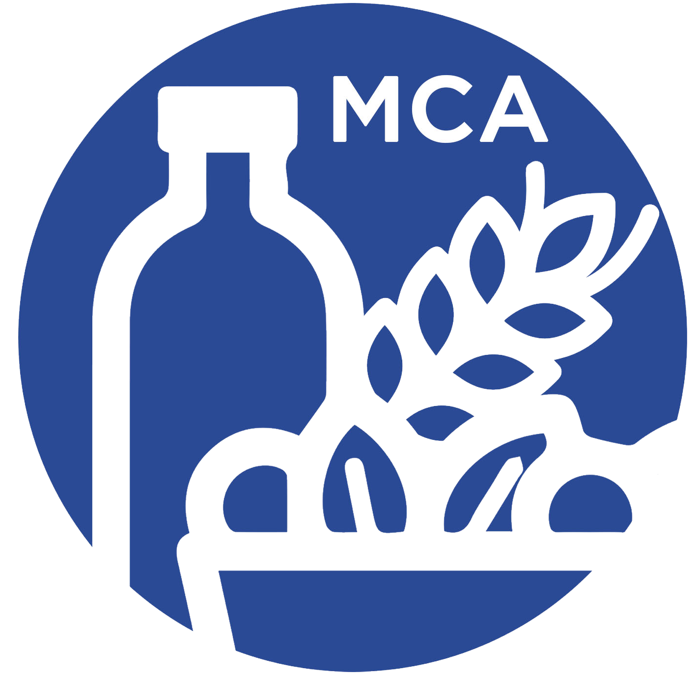

OBJETIVO GENERAL
Formar personal cientifico en las áreas de Ciencia, Inocuidad e Ingenieria de Alimentos y Biotecnologia, capaz de desarrollar procesos para la conservación e industrialización de productos alimenticios, particularmente frutas tropicales y aportar recomendaciones al sector hortofruticola regional sobre su manejo, transporte, almacenamiento y distribución mediante la elaboración de proyectos de investigación básica y/o aplicada
PERFÍL DE INGRESO
El candidato debe ser egresado de una Licenciatura MCA en caso de ser egresado de otras licenciaturas el Consejo de la MCA tomará la decisión sobre la situación del candidato. Esto es con la finalidad de cubrir los objetivos del plan de estudios. El candidato debe haber obtenido un promedio general mínimo de 80 o equivalente en el grado inmediato anterior.
PERFIL DE EGRESO
El Graduado de la MCA será un individuo con iniciativa, autocrítico, preparado para desarrollar competencias en el área de Ciencia, Tecnología, Ingeniería y Biotecnología de Alimentos. Asimismo, tendrá la capacidad de aprender por sí mismo para mantener sus conocimientos actualizados en dichas áreas.
PROGRAMA MAESTRIA
El programa de la Maestria en Ciencias en Alimentos que se imparte en el Instituto TecnolÓgico De Tuxtepec
se encuentra dentro del PADRÓN NACIONAL DE POSGRADOS DE CALIDAD reconocida por el CONACYT, lo que permite
que a todos los estudiantes aceptados se les tramite una BECA-CONACYT.
PROCESOS ADMINISTRATIVOS
Los aspirantes a ingresar al programa de la MCA, déberan cumplir los siguientes requisitos:
1. Posser título de estudios de Licenciatura (0 comprometerse a tenerlo en un plazo no mayor a seis meses) obteniendo de una institución
de reconocimiento oficial, nacional o extranjera en las áreas de Ingenieria Bioquimica, Ingeniería Pesquera, Ingeniero Quimico en Alimentos,
Licenciado en Nutrición o afines.
2. Entregar Solicitud de Ingreso en las oficinas de la Coordinación de la MCA según el calendario de proceso de admisión.
3. Disponibilidad de tiempo completo y compromiso de exclusividad para este programa.
4. Acreditar los exámenes de conocimientos Guía Matemáticas, Guia Microbiologia, Guía Estadística y Guia Bioquímica
5. Una vez aprobado el examen, sostener una entrevista con el H. Consejo de la MCA
Efectuar un pago de $4,000.00 MXN por inscripción en Recursos Financieros del Instituto Tecnológico de Tuxtepec


MAYORES INFORMES

MCA D López Santiago
|Coordinador de la MCA|
Correo:
|postgrado@ittux.edu.mx|
Telefono (s):
|01 (287) 87 5 10 44|
|87 5 18 80 Ext. 170|
HORARIO DE ATENCION
Atención:
|11-14 hrs.|
Oficina de coordinación de posgrado
PROGRAMA MCA ITTUX
Ingreso:
|Semestral|
Recepción de Documentos:
|2da. Semana Ene/Ago|
Examen de Admisión:
|2da. Semana Jun/Dic|
Publicación de Resultados:
|3ra. Semana Jun/Dic|
Publicación de Resultados:
|3ra. Semana Jun/Dic|
Fecha de Inscripción:
|3ra. Semana Jun/Dic|
Inicio de cursos:
|4ta. Semana Ene/Ago|